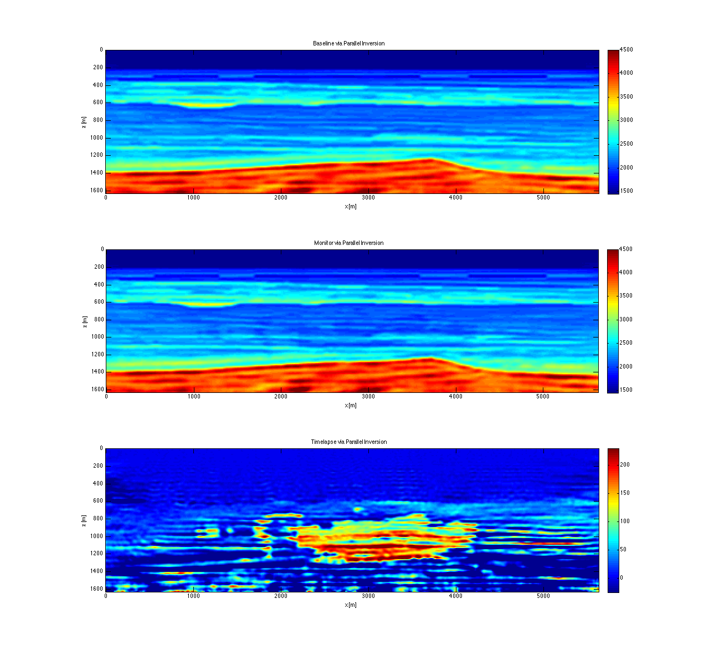
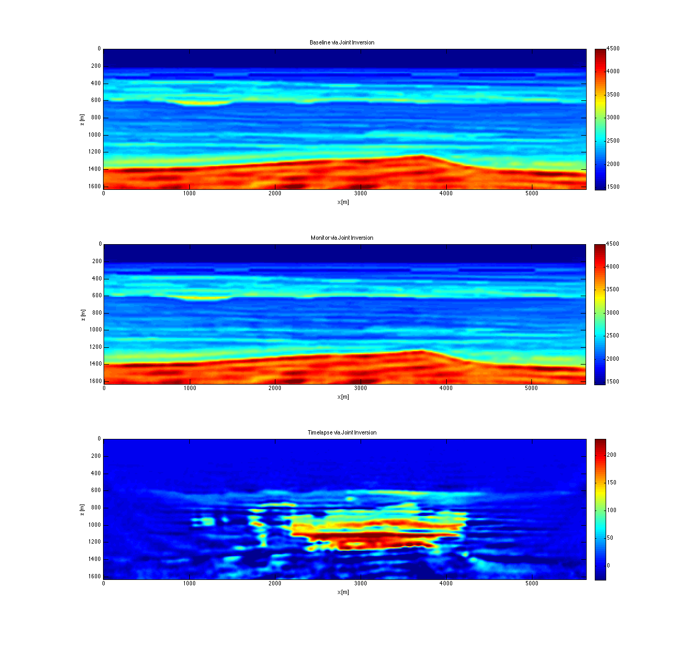

Timelapse FWI: examples and results
Author: Felix Oghenekohwo (foghenekohwo@eos.ubc.ca)
Date: February, 2015
Contents
% Set paths curdir = pwd; basedir = curdir(1:end-4); datadir = [basedir '/data/']; resultsdir = [basedir '/results/timelapse_BG']; % Load Stored data load([datadir '/ObsData.mat']) load([datadir '/BG_timelapse_model.mat']) % Load previously computed results load([resultsdir '/JRM_Updates.mat']) joint_base = reshape(1e3./sqrt(JBase(:,end,end)),131,451); joint_mon = reshape(1e3./sqrt(JMon(:,end,end)),131,451); joint4D = joint_base - joint_mon; load([resultsdir '/IRS_Updates.mat']) ind_base = reshape(1e3./sqrt(IBase(:,end,end)),131,451); ind_mon = reshape(1e3./sqrt(IMon(:,end,end)),131,451); ind4D = ind_base - ind_mon; % Plotting parameters caxModel = [1450 4500]; cax4D = [-25 230]; scrsz = get(0,'ScreenSize'); xlab = 'x [m]';ylab = 'z [m]';
True BG timelapse models
figure(1); set(gcf,'Position',[1050 scrsz(4)/2 scrsz(3)/2 scrsz(4)/1.2]); subplot(311);imagesc(x,z,vbase);axis image;caxis(caxModel); xlabel(xlab);ylabel(ylab); title('True baseline');colorbar; set(gca,'plotboxaspectratio',[4 1 1]); subplot(312);imagesc(x,z,vmon);axis image;caxis(caxModel); xlabel(xlab);ylabel(ylab); title('True monitor');colorbar;colormap('jet'); set(gca,'plotboxaspectratio',[4 1 1]);colormap(jet); subplot(313);imagesc(x,z,vbase-vmon);axis image; xlabel(xlab);ylabel(ylab); title('Timelapse');colorbar;caxis(cax4D); set(gca,'plotboxaspectratio',[4 1 1]);colormap('jet');

Parallel or Independent Inversion results
figure(2); set(gcf,'Position',[1050 scrsz(4)/2 scrsz(3)/2 scrsz(4)/1.2]); subplot(311);imagesc(x,z,ind_base);axis image;caxis(caxModel); xlabel(xlab);ylabel(ylab); title('Baseline via Parallel Inversion');colorbar; set(gca,'plotboxaspectratio',[4 1 1]); subplot(312);imagesc(x,z,ind_mon);axis image;caxis(caxModel); xlabel(xlab);ylabel(ylab); title('Monitor via Parallel Inversion');colorbar;colormap('jet'); set(gca,'plotboxaspectratio',[4 1 1]);colormap(jet); subplot(313);imagesc(x,z,ind4D);axis image; xlabel(xlab);ylabel(ylab); title('Timelapse via Parallel Inversion');colorbar;caxis(cax4D); set(gca,'plotboxaspectratio',[4 1 1]);colormap('jet');
Joint Inversion results
figure(3); set(gcf,'Position',[1050 scrsz(4)/2 scrsz(3)/2 scrsz(4)/1.2]); subplot(311);imagesc(x,z,joint_base);axis image;caxis(caxModel); xlabel(xlab);ylabel(ylab); title('Baseline via Joint Inversion');colorbar; set(gca,'plotboxaspectratio',[4 1 1]); subplot(312);imagesc(x,z,joint_mon);axis image;caxis(caxModel); xlabel(xlab);ylabel(ylab); title('Monitor via Joint Inversion');colorbar;colormap('jet'); set(gca,'plotboxaspectratio',[4 1 1]);colormap(jet); subplot(313);imagesc(x,z,joint4D);axis image; xlabel(xlab);ylabel(ylab); title('Timelapse via Joint Inversion');colorbar;caxis(cax4D); set(gca,'plotboxaspectratio',[4 1 1]);colormap('jet');